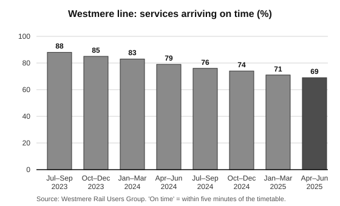

Sample Analysing Argument Essays
The three responses below were all written for the same task: Scenario 3 on the Practice Articles for Analysis page, a letter to the editor of the Westmere Courier by Priya Raman, a nurse who commutes to Melbourne by train. The first sits in the low range, the second in the middle range and the third in the high range. Each one has an introduction, three body paragraphs built around the letter’s main arguments, and a conclusion. Read the task and the letter first, then compare how each response handles argument, language, the visual and the audience.
The Task and Letter
The task, background information and letter are reproduced below.
Section C – Analysis of argument and language
Instructions
- In this section, you are required to analyse the use of argument(s) and language to persuade an intended audience to share the point of view expressed in an unseen persuasive text.
- Read the background information below and the material that follows, and write an analytical response to the task.
- For the purposes of this task, the term ‘language’ refers to written and spoken language, and ‘visuals’ refers to images and graphics.
- This section is worth one-third of the total marks for the examination.
Task
Write an analysis of the ways in which argument(s), written and spoken language, and visuals are used in the material below to try to persuade the intended audience to share the point of view presented.
Background information
Westmere is a regional town about 150 kilometres from Melbourne, and many of its residents travel to the city by train for work, study and medical appointments. In recent years there have been many complaints about delays and cancellations on the line. The Westmere Courier is the local newspaper, and each week it publishes letters from readers. The following letter was written by Priya Raman, a nurse who commutes to a Melbourne hospital. The graph was printed beside the letter and was supplied by the Westmere Rail Users Group, a volunteer group that represents passengers.
Letters to the editor
We deserve a train we can count on
Last Tuesday I sat on the 6.12 am train from Westmere for an hour and forty minutes. The trip is meant to take an hour and five. Somewhere outside Darrow we stopped for ‘signal faults’ and stayed there long enough for the man across the aisle to finish his crossword, eat his lunch at half past seven in the morning and fall asleep. I got to the hospital fifty minutes late for a twelve-hour shift, on a ward that was already two nurses short.
This is not unusual. This is a normal week.
I have caught this train for nine years. When I started, it was something you could set your watch by. You’d get the odd delay in a heatwave, and everyone understood that. Now I leave home with no real idea of when I’ll get to work, or whether my train will turn up at all. My colleagues who travel from Ardley and Hollins say exactly the same thing.
Last month I got talking to a young woman on the platform at Westmere called Ella. She’s in the second year of a nursing degree (I told her she was mad, and she laughed). Because of cancellations, she has missed two of her hospital placement days this year, and the university has told her that if it happens again she may have to repeat the whole unit. So now she gets up at 4.30 to catch an earlier train ‘just in case’, which gets her into the city two hours before she needs to be there, sitting in a café she can’t really afford. She is nineteen. She should not have to plan her whole life around a train that may or may not come.

The figures back this up. The Westmere Rail Users Group has been keeping track of every service on our line since 2023, and you can see the results on this page. In the middle of 2023, nearly nine out of every ten trains arrived on time. By the middle of this year it was fewer than seven. That means on any given day, roughly one in three of us is late – for work, for school, for medical appointments, for the job interview we spent weeks getting ready for.
And it isn’t only delays. On eleven mornings so far this year my train has been cancelled outright and a coach sent instead – a coach that takes nearly two hours, has no toilet and stops in every town along the way. Try explaining that to the patient whose dressing was meant to be changed at 7.30, or to the night-shift nurse who has been waiting to go home since seven.
Some people will say, well, just drive. I’ve done the sums on that too. A return trip to Melbourne is about 300 kilometres. Between petrol, tolls and parking near the hospital (which is $28 a day if you’re lucky enough to find a spot), driving would cost me close to $90 a day – about $350 for a normal four-shift week. That’s before you even think about wear and tear on the car, or what it’s like to drive home down the highway after a night shift with your eyes closing. My train ticket costs a fraction of that. When it actually runs, the train is the cheapest, safest and most sensible way for people like me to get to work. That is exactly why it matters so much when it doesn’t.
We are told the problem is ‘ageing infrastructure’. I don’t doubt it. Parts of the track past Darrow were laid before my grandparents were born, and the signals are so old that replacement parts have to be specially made. But none of this is news. A state government review pointed out these problems back in 2019, and since then we have had plenty of announcements and very little actual work.
Meanwhile, the city lines have had their new tunnels, their new stations and their shiny new trains. Good on them. I don’t begrudge anyone a better trip to work. But it is hard not to feel that people out here are an afterthought – that because there are fewer of us, our time somehow matters less.
It does matter. When the train fails, people drive instead, and anyone who has been on the highway at 7 am lately knows how well that’s going. Young people who can’t rely on getting to uni or TAFE in the city end up moving away, and most of them don’t come back. Local businesses lose staff. At my hospital, three nurses from this part of the state have resigned in the past year, and at least two of them told me the train was a big part of the reason. When a ward is already short-staffed, that is not a small thing. And those of us who don’t have a choice – who can’t afford a second car, or who don’t drive – are simply left standing on the platform.
I am not asking for the impossible. I am asking for the track and signal upgrades we were promised six years ago, with a real start date and a real budget. I am asking for honest information on the app, so I’m not standing on a freezing platform watching the departure time change three times. And I am asking our local member, who I notice drives to Melbourne, to come and catch the 6.12 with me one morning and see what it’s like.
I’ll even save you a seat. If the train turns up.
Priya Raman, Westmere
Sample Essay I (Low)
In the letter ‘We deserve a train we can count on’ written by Priya Raman in the Westmere Courier, she talks about how the trains in Westmere are always lateStructure & evidenceThe contention is paraphrased as a topic, not stated as an argument — we learn what the letter is about, not what it wants or who it is trying to move. and the government needs to fix it. She is a nurse and she uses alot of persuasive techniques to get the reader to agree with herAudience positioning‘The reader’ is never defined. The criteria ask for the intended audience — Westmere commuters, residents and the local member — and this essay never names them.. Priya’s first argument is that the trains are late and it is affecting people. She uses an anecdote at the start about when her train was late last Tuesday. She says that it took ‘an hour and forty minutes’ when it is meant to take ‘an hour and five’. This is an anecdote and it makes the reader feel sorry for herLanguage & techniqueTechnique named, effect stated, but nothing in between. Push further: what in the anecdote creates sympathy, and why does that sympathy help her argument?. She also talks about a man who finished his crossword and ate his lunch and then fell asleep which is funnyIdeas & interpretationThe humour is noticed but stops at the reaction. The joke has a job — it makes Raman seem reasonable before she gets angry — and that job is where the marks are.. Then she says she was ‘fifty minutes late’ for her shift. This makes the reader feel sympathy because nurses are important and the hospital was already short of staffAudience positioningA good instinct: the shift to patient care is spotted. It needs linking to Raman’s credibility and to the reader’s sense that the problem reaches beyond commuters.. Priya also talks about a girl called Ella who is a nursing student and is nineteen. Ella has missed placement days because of the train. This is another anecdote and it is sadStructure & evidenceThe second anecdote is treated exactly like the first. The essay misses that Ella speaks to a different part of the audience — parents and young people. because she is young and has to get up at 4.30 in the morning. The reader will feel bad for Ella. Priya’s second argument is that the trains are getting worse. She uses statistics to show this. The graph shows that the trains arriving on time went from 88 to 69. This is a big drop and it shows the trains are getting worse. She also says ‘roughly one in three of us is late’. Statistics are used to make an argument more believableLanguage & techniqueA generic definition that could be pasted into any essay. Assessors reward analysis of these particular figures — the fall from nine in ten to fewer than seven. and the reader will believe her because it has numbers. The graph is grey and the last bar is darker then the othersLanguage & techniqueThe visual is described but not interpreted. Why is the last bar darker? Answering that one question would turn description into analysis.. She also uses a rhetorical question when she saysLanguage & techniqueMisidentified: this is not a question at all. Raman is anticipating an opposing view so she can rebut it — a technique worth far more when named accurately. ‘Some people will say, well, just drive.’ This makes the reader think about it. She then says driving would cost ‘close to $90 a day’ which is alot of money so the reader will agree that driving is not a good ideaIdeas & interpretationThe cost figure is picked up, but its purpose — turning the opponents’ solution into evidence for her own case — goes unseen.. Priya’s third argument is that the government does not care about people in Westmere. She compares the city lines to the country lines. The city has ‘new tunnels’ and ‘shiny new trains’ and Westmere doesn’t get anything. This is unfair and the reader will think the government doesnt care about people in the countryAudience positioningThe closest this essay comes to the letter’s central idea of fairness. Developed, it could have anchored a whole paragraph.. At the end she uses repetition, ‘I am asking’ three times. Repetition makes the argument stick in the readers headLanguage & techniqueA stock effect that fits any repetition anywhere. Better: ‘I am asking’ sounds like a formal list of demands, and each demand is modest, so refusing them looks unreasonable.. She also invites the local member to catch the train with her which is a good way to finish. She says ‘I’ll even save you a seat. If the train turns up.’ This is humour and it makes the reader laughLanguage & techniqueThe final line is read as a joke only. Its sting — a last reminder of unreliability, aimed at the local member — is the point.. In conclusion, Priya Raman uses anecdotes, statistics, a graph and repetition to persuade the reader that the trains in Westmere need to be fixed. She is very persuasive because she is a nurse and she uses lots of different techniquesStructure & evidenceThe conclusion judges the letter instead of analysing it, and counts techniques instead of explaining how the argument builds. Section C never asks whether a piece is persuasive..
Sample Essay II (Medium)
In her letter to the editor of the Westmere Courier, titled ‘We deserve a train we can count on’, nurse and long-time commuter Priya Raman contends that the state government has neglected the Westmere train lineStructure & evidenceContention, form, writer, audience and tone all in the opening paragraph — the checklist done properly. and must commit to the track and signal upgrades it promised. Writing to an audience of mainly Westmere residents, many of whom would also rely on the train, as well as the local member of parliamentAudience positioningThe audience is split into groups. The essay could go further by showing later which parts of the letter target which group., Raman uses a frustrated but at times humorous tone to argue that regional passengers are being treated as less important than those in the city. Raman first argues that the unreliable train service is having a real impact on the people who use it. She begins with a personal anecdote about her trip to work the previous Tuesday. By describing how she ‘sat on the 6.12 am train from Westmere for an hour and forty minutes’, she immediately places the reader on the train with herAudience positioningA precise effect: the anecdote is read as a way of putting the reader in the writer’s position, not just as a sad story.. The humorous image of the man across the aisle who was able to ‘finish his crossword, eat his lunch at half past seven in the morning and fall asleep’ exaggerates how long the delay lasted, and the audience are likely to find this amusing but also recognise it from their own experiences. As such, the audience, particularly other commuters, are more inclined to see Raman as one of themAudience positioningEffect chained to a specific part of the audience — the how of persuasion, not just the that. and trust her point of view. Raman then reveals that she was ‘fifty minutes late for a twelve-hour shift, on a ward that was already two nurses short’. This shifts the tone from humorous to seriousStructure & evidenceTracks a tonal shift at the moment it happens — the beginnings of sequencing analysis., as the audience start to understand that the delays do not only affect commuters but also the patients who rely on nurses like her. The short sentence ‘This is a normal week’ emphasises how regular these problems have become. Raman also includes the anecdote of Ella, a nineteen-year-old nursing student who now catches an earlier train ‘just in case’. The audience are positioned to feel sympathy for Ella, as she is young and is already being disadvantaged by something she cannot control. Raman’s second argument is that the service is getting worse and that there is no real alternative to it. She uses the statistics from the Westmere Rail Users Group to show that ‘nearly nine out of every ten trains’ were once on time but now it is ‘fewer than seven’, and that ‘roughly one in three of us is late’. The use of the inclusive pronounLanguage & techniqueTechnique named accurately and taken straight to its effect on community feeling. ‘us’ groups Raman together with the audience, encouraging them to see the problem as one that affects the whole community. The accompanying bar graph reinforces this, as each bar is lower than the one before it, showing a steady decline over two years. The final bar is shaded darker than the restLanguage & techniqueUnlike Essay I, the darker bar is explained: it draws the eye to the lowest figure. Visual feature, purpose and effect in one move., drawing the reader’s eye to the lowest figure of 69 per cent. As a result, the audience are more likely to acceptAudience positioningThe ‘the audience are more likely to’ formula keeps effects present throughout, but by the third or fourth use it shows. Varying it reads as more confident. that the line is getting worse and is not just having a bad weekIdeas & interpretationUnderstands what the graph adds — a trend rather than an incident — which is exactly why a writer would include it.. Raman then anticipates the argument that people shouldStructure & evidenceCorrectly identifies the rebuttal. Push further: show how the rebuttal turns the opposing view into support for her own. ‘just drive’ instead. She uses logic and statistics to rebut this, calculating that driving would cost her ‘close to $90 a day’, and she appeals to the audience’s sense of safety by describing driving home after a night shiftAudience positioningA vivid image linked to an appeal to safety, but the analysis is brief. A sentence on why this image is hard to forget would lift it. ‘with your eyes closing’. As such, the audience are more likely to agree that the train is the ‘cheapest, safest and most sensible’ option, which makes its unreliability seem even more frustrating. Finally, Raman argues that regional people are being treated unfairly and that the government needs to act. She explains that the problems were identified ‘back in 2019’ but there has been ‘plenty of announcements and very little actual work’. This makes the government seem as though it only cares about looking like it is doing something, causing the audience to lose trust in their promisesAudience positioningEffect stated on the government’s image — the essay keeps track of who the argument is aimed at.. Raman then compares the Westmere line to the city lines, which have had ‘new tunnels’, ‘new stations’ and ‘shiny new trains’. Although she saysIdeas & interpretationThe concession is noticed, but the edge in it is not quite named. ‘Good on them’ carries sarcasm, and that is worth spelling out. ‘Good on them’, the comparison makes the audience feel that regional people are an ‘afterthought’. She then lists the wider consequences for the community, such as young people moving away and nurses resigning from her hospital, which broadens her argument from a personal complaint to a community issueStructure & evidenceA strong structural observation: the widening scope of the argument is read as strategy.. Raman uses repetition of ‘I am asking’ to set out exactly what she wants, which makes her demands seem reasonable and clearLanguage & techniqueBetter than a stock comment on repetition — the effect is tied to how the demands are received.. She ends by challenging the local member to catch the train with her, and the final line ‘If the train turns up’ uses humour to leave the audience with a reminder of how unreliable the service is. Overall, Priya Raman uses personal anecdotes, statistics, a bar graph and a comparisonStructure & evidenceThe conclusion lists techniques rather than synthesising how the argument develops — a typical middle-range finish. with the city to persuade the audience that the Westmere line has been neglected. She positions the audience to feel sympathy and frustration, and to support her call for the government to finally upgrade the line.
Sample Essay III (High)
In a letter to the editor of the regional Westmere Courier, nurse Priya Raman contends that the Westmere train line has been left to decline while city commuters enjoy new investment, and that the government must deliver the long-promised track and signal upgrades with ‘a real start date and a real budget’. Her readership is a community that knows the train intimately, and Raman writes less to inform them than to give their shared frustration a shape and a targetIdeas & interpretationA sophisticated reading of purpose: these readers already know the facts, so the letter’s job is to channel their frustration. This frames the whole essay.. Her tone moves from wry, almost weary humour into measured indignationStructure & evidenceThe tonal journey is mapped in the introduction, so every paragraph after it has a place to sit — strategic sequencing from the start., and finally into a pointed challenge to the local member, so that by the end of the letter a private inconvenience has become a public question of fairness. Raman’s first argument is that the failing service has real human costs, and she makes this case through story rather than statement. Raman opens not with an argument but with a sceneStructure & evidenceReads the opening as a choice with a purpose, explaining why the letter begins this way before analysing what it says.. The 6.12 am train, the ‘signal faults’ outside Darrow and the man who manages to ‘finish his crossword, eat his lunch at half past seven in the morning and fall asleep’ are comic in their detail, and this is a deliberate choice. Humour allows Raman to establish herself as reasonable rather than shrillAudience positioningThe humour is analysed for what it does to her credibility, not just for its effect on mood.; she is laughing at the absurdity before she is angry about it. Yet the joke ends abruptly when she arrives ‘fifty minutes late for a twelve-hour shift, on a ward that was already two nurses short’. The stakes are suddenly raised from a ruined morning to patient care. Her credibility as a nurse is doing quiet work hereLanguage & techniqueEthos identified without being reduced to a label: the essay shows how her profession persuades without her having to argue it.. She never has to argue that her lateness matters, because the reader already understands what a short-staffed ward means. The two blunt sentences that follow, ‘This is not unusual. This is a normal week’, land with the flatness of someone stating a fact that should be shocking but no longer isLanguage & techniqueAnalyses sentence length and rhythm and connects them to the reader’s response — language at the level of syntax., and it is this resignation that invites the reader’s outrage on her behalf. The anecdote of Ella widens the appeal. Where Raman’s own story speaks to fellow workers, Ella, who is ‘nineteen’, getting up at 4.30 and sitting ‘in a café she can’t really afford’, speaks to parents and to anyone worried about whether young people have a future in the townAudience positioningDifferentiated audience: one anecdote is shown to target a different group from another.. The decline of the train is gradually connected to the decline of the town itselfIdeas & interpretationIdentifies how the stakes rise over the course of the letter — conceptual, not technique-by-technique.. Having made the problem personal, Raman then makes it measurableStructure & evidenceA clean linking sentence that names the argument’s next move. The essay always knows where it is in the text., arguing that the decline is real and that neither the alternatives nor the official excuses hold up. Her nine years on the line give her a before-and-after authority (‘something you could set your watch by’), but she is careful not to rest on memory alone. The Rail Users Group figures, translated into plain fractions, ‘nearly nine out of every ten’ and ‘fewer than seven’, are easier for a general reader to feel than a percentageLanguage & techniqueExplains why the writer chose fractions over percentages — close attention to small choices and the audience they suit., and the accompanying graph turns this decline into something almost physical: eight bars stepping steadily down, with the final, darkest bar marking 69 per cent as the low point so far. The grey, unadorned design gives the graph the look of neutral data rather than campaign materialLanguage & techniqueThe visual’s style, not just its content, is analysed and linked to authority. High-range visual analysis., which strengthens its authority, while the inclusive ‘us’ in ‘roughly one in three of us is late’ quietly recruits every reader who has stood on that platform into her argumentAudience positioningInclusive language tied to a specific group of readers, with a strong, precise verb.. Raman then raises the obvious objection, ‘well, just drive’, in a dismissive voice before dismantling it with arithmetic, ‘close to $90 a day’, and with an image that is hard to forget: driving down the highway after a night shift ‘with your eyes closing’. By the time she concludes that the train is ‘the cheapest, safest and most sensible way’ to get to work, she has turned her opponentsStructure & evidenceThe rebuttal is analysed as a reversal: the objection becomes evidence for her case. This is the step Essay II missed.’ solution into further evidence for her own case. The same strategy appears in her response to the official explanation of ‘ageing infrastructure’. Rather than disputing it, she concedes it (‘I don’t doubt it’), and then uses the concession against the government: the problems were identified ‘back in 2019’, yet there have been ‘plenty of announcements and very little actual work’. The balanced structure of this phrase exposes the gap between words and actionLanguage & techniqueSentence structure read as argument — the parallel phrasing itself makes the case.. Raman’s final argument is that regional people are being treated as an afterthought, and that the government must now act. Her indignation is at its most controlled in the comparison with the city. The list of ‘new tunnels’, ‘new stations’ and ‘shiny new trains’ is followed by ‘Good on them’, a concession that sounds generous but carries an edge of sarcasmLanguage & techniqueThe double function of the concession is drawn out, showing close attention to tone.. It allows Raman to avoid seeming resentful while still making the reader feel the unfairness, which she then names directly: people out here are ‘an afterthought’, as though ‘our time somehow matters less’. The short rebuttal ‘It does matter’ marks a turning pointStructure & evidenceLocates a hinge in the letter and explains what changes after it., after which the letter widens its consequences to the whole community, including nurses resigning from her hospital and people who ‘are simply left standing on the platform’. Her conclusion then shifts from description to demand. The repeated ‘I am asking’ gives her requests the rhythm of a formal petition, and the requests themselves are deliberately modest, which makes refusing them seem unreasonableIdeas & interpretationExplains the logic behind modest demands — persuasion analysed as reasoning as well as emotion.. Her final move is her most pointed: an invitation to the local member, ‘who I notice drives to Melbourne’, to catch the 6.12 with her. The aside is barbed, quietly suggesting that those who make decisions about the train do not have to live with itAudience positioningReads the subtext of a single aside and identifies its target: the local member.. The closing line, ‘If the train turns up’, returns to the dry humour of the opening, but now the joke has a stingStructure & evidenceConnects the ending back to the opening, reading the letter’s structure as a whole., leaving the reader with the very uncertainty the whole letter has been arguing against. Through a careful movement from comic anecdote to hard evidence, and from concession to challenge, Raman transforms a familiar local grievance into an argument about fairness and respectIdeas & interpretationThe conclusion synthesises what the letter does and why, rather than listing how.. Her readers are positioned not only to sympathise with her, but to see their own frustration reflected and justified, and to expect their local member to answer for it.